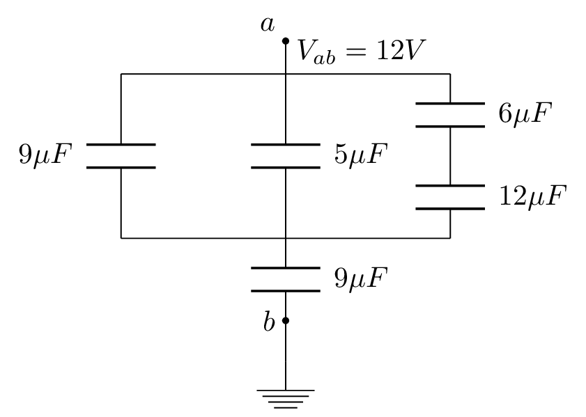
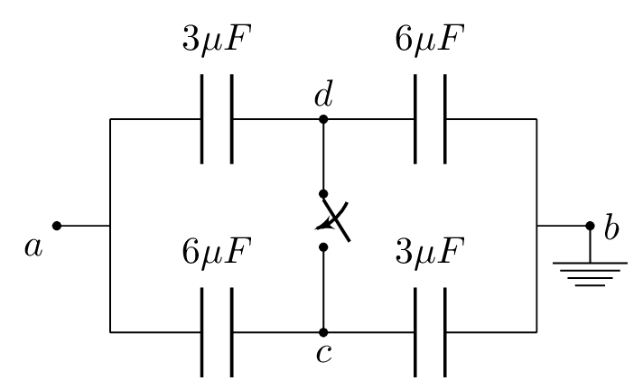

An electron \((q = -1.602\times10^{-19} \,C)\) is accelerated through a potential difference of \(2.00\times10^{5} \,V\) over a distance of 20 cm.
If the electric field is uniform, what is its magnitude?
How much work is done on the electron?
What is the force on the electron?
If the mass of the electron is \(9.1\times 10^{-31} \,kg,\) what is the speed of the electron? How does this compare to the speed of light \((c = 3\times 10^{8} \,m/s)?\)
2.
An electric dipole of strength \(p = 2\times 10^{-6} \,C.m\) has its positive charge at point (0, 1 m) and its negative charge at (0, -1 m).
What is the electric potential at point (2 m, 3 m)?
At (1 m, -2 m)?
How much work is required to move a charge of \(3 \,\mu C\) from the first point to the second point?
3.
A charge of 100 nC is located at the origin of a coordinate system. A second charge of 200 nC is slowly brought from a large distance to within 10 cm of the first charge.
How much work is required?
What is the electrical potential energy of the second charge?
What was its potential energy before being moved?
4.
The electric field is given by the equation
\begin{equation*}
\vec{E} = 2Ax \hat{i} + B \hat{j},
\end{equation*}
where \(A = 10^{4} \,V/m^{2}\) and \(B = 10^{4} \,V/m.\)
How much work does the electrical field do when a charge of \(2 \mu C\) is taken from point (0, 0) along the x-axis to (1 m, 0) and then parallel to the y-axis to (1 m, 2 m)?
How much electrical work is done when the charge is moved along a straight line from (0, 0) to (1 m, 2 m)?
What is the equation for the electric potential of this field assuming the origin has a potential of zero?
What is the electric potential at point (-1 m, 2 m)?
5.
Three point charges, which initially are infinitely far apart, are placed at the corners of an equilateral triangle of side a. Two of the point charges are identical and have charge q. What must be the value of the third charge if the net work in placing them at the corners of the triangle is zero?
6.
Two stationary point charges 10 nC and -20 nC are located 10 cm apart. An electron is released from rest between them at a distance of 3 cm from the negative charge. What is the speed of the electron when it reaches a point 3 cm from the positive charge?
7.
The electric potential is given by \(V = Cxy^{2},\) where \(C = 10^{4} \,V/m^{3}.\) Find
\(\displaystyle \vec{E(x,y,z)},\)
V at (1 m, 2 m, 3 m),
at (1 m, 2 m,3 m).
8.
The electrical potential is given by \(V = axy + by^{2} + cy,\) where \(a = 3 \,V/m^{2},\)\(b = -2 \,V/m^{2},\) and \(c = 5 \,V/m.\)
What is the electric field at an arbitrary point (x,y,z)?
At what point is the electric field equal to zero?
At what point is the electric potential zero?
9.
Rutherford was able to show that alpha particles of energy 7.7 MeV could be stopped by the electrical repulsion of an aluminum nucleus.
What is the minimum distance of approach of the center of the alpha particle to the center of the aluminum nucleus (i.e. the approximate radius of the aluminum nucleus)?
What was the original velocity of the alpha particle?
A potential difference of 4000 V is applied to the plates of a parallel plate capacitor.
If the air between the plates ionizes when the electric field exceeds 3 MV/m, what is the minimum separation between the plates?
What is the surface charge density on the plates at that time?
11.
A pair of charged parallel conducting plates produces a uniform field of \(2\times 10^{4} \,N/C,\) directed to the right, between the plates. The separation of the plates is 50 mm. An electron is projected from plate A, directly toward plate B, with an initial velocity of \(v_{o} = 2.0 \times 10^{7} \,m/s,\text{.}\) What is the velocity of electron just before it hits plate B.
Capacitors.
12.
A parallel-plate capacitor has a capacitance of 500 pF and a voltage of 100 V. If the separation between the plates is 0.5 mm, find
the charge on the capacitor,
area of the capacitor,
the electric field between the plates,
the energy stored in the capacitor,
the charge density on the surface of the plates,
the energy density of the electric field between the plates.
13.
A spherical capacitor has a capacitance of 1 nF and a charge of \(10 \,\mu C.\) If the inner sphere has an outer radius of 10 cm, find
the spacing between the two spheres,
the potential difference between the two spheres,
the energy stored in the capacitor,
the charge density on the inner sphere,
the charge density on the outer sphere,
the electric field mid-way between the spheres,
the average energy density between the two spheres.
14.
A cylindrical capacitor has an inner radius of 1 mm, an outer radius of 2 mm, and a length of 4 m. If the voltage across the capacitor is 10 V, find
the capacitance of the capacitor,
the charge per unit length on the capacitor,
the energy stored in the capacitor,
the electric field mid-way between the cylinders,
the energy density of the electric field mid-way between the capacitors,
the average energy density of the electric field inside the capacitor.
15.
A parallel-plate capacitor has a capacitance of 100 pF and a voltage of 100 V. Find
charge on the capacitor,
the energy stored in the capacitor.
If the charge on the capacitor is kept constant while the distance between the plates is doubled, what happens to the electric field between the plates?
What is the energy stored in the new capacitor?
How much work must be done to separate the plates?
What is the new capacitance when the separation is doubled?
If the area of the plates is \(0.2 m^{2},\) what is the force between the two plates?
16.
A cylindrical capacitor of length 20 m stores 10 nJ of energy when the voltage is 5 V. Find
the charge on each conductor,
the ratio of the radii of the conductors.
17.
A spherical capacitor of inner radius 10 cm stores 10 nC of charge when charged with 10 V. Find
its capacitance,
its outer radius,
the energy stored,
the volume between the two spheres,
the average energy density of the electric field between the spheres.
18.
A capacitor of 12 mF is connected in series to a capacitor of 24 mF.
What is the equivalent capacitance?
If 8 volts are applied across the combination, what is the charge on each capacitor?
What is the voltage across each capacitor?
What would be the charge and voltage on each capacitor if they had been connected in parallel?
19.
Find the charge on and voltage across each of the capacitors shown at right.

20.
The capacitors in the figure below are initially uncharged and connected with the switch S open. If the applied voltage is Vab = 36 V,

what is the potential difference \(V_{cd}\text{?}\)
What is the voltage on each capacitor after the switch S is closed?
How much charge flowed through the switch when it was closed?
21.
A flat-plate capacitor of length 20 cm, width 10 cm, and spacing 1 mm, is connected to a 24 V battery. Find
the charge on the capacitor,
the surface charge density on the plates,
the energy stored in the capacitor.
If strontium titanate of dielectric constant 310 occupies the space between the capacitors, find the permittivity of the dielectric,
the capacitance of the capacitor,
the energy density of the electric field inside the dielectric.